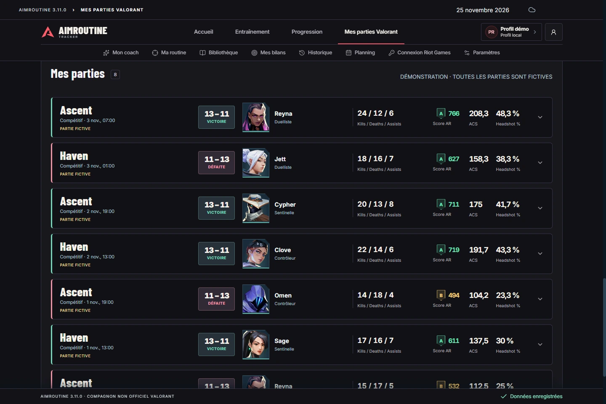

Liaison du compteAccount linking
Riot Sign On
Connexion désactivée dans cette maquette.Sign-in is disabled in this mockup.
Les routines AIM restent disponibles dans le logiciel hors ligne.Aim routines remain available in the app offline.
Riot API · VALORANT
Dans AimRoutine Tracker 3.11.0, l’import JSON permet déjà de consulter les cartes, les scores et les statistiques de tes parties dans le logiciel Windows.In AimRoutine Tracker 3.11.0, JSON imports already let you review maps, scores and stats for your matches in the Windows app.
Riot Sign On et l’import automatique restent indisponibles. L’intégration reste soumise à l’autorisation de Riot.Riot Sign On and automatic imports are currently unavailable. This integration requires Riot approval.

La liaison serait facultative. Le joueur choisirait de partager ses données Riot avant de retrouver ses parties terminées dans AimRoutine.Linking would be optional. Players would choose whether to share their Riot data before viewing completed matches in AimRoutine.
Le joueur ouvre l’historique dans AimRoutine et choisit de lier son compte Riot.The player opens match history in AimRoutine and chooses to link their Riot account.
AimRoutine explique quelles données seraient utilisées, pour quel usage et qui pourrait les consulter.AimRoutine explains what would be used, why it is needed and who could view it.
Après accord du joueur, la connexion se terminerait sur la page officielle Riot.After the player agrees, they would sign in on Riot’s official page.
Une fois l’accès autorisé, le joueur retrouverait ses parties et leurs statistiques dans AimRoutine.Once access is authorized, the player would see their own matches and stats in AimRoutine.
Ces maquettes sont statiques. Les valeurs sont fictives et la page ne collecte aucun identifiant Riot.These mockups are static. Values are fictional and the page collects no Riot credentials.
Connexion désactivée dans cette maquette.Sign-in is disabled in this mockup.
Les routines AIM restent disponibles dans le logiciel hors ligne.Aim routines remain available in the app offline.
Les données autorisées serviraient à consulter ses propres parties après le match.Permitted data would be used to review your own matches after play.
Le joueur pourrait choisir de lier ou de ne pas lier son compte.The player could choose whether to link the account.
Exemple fictif · AscentFictional example · Ascent
Le bilan associerait carte, score et statistiques de la partie.The review would bring the map, score and match stats together.
GET /riot/account/v1/accounts/meGET /val/match/v1/matchlists/by-puuid/{puuid}GET /val/match/v1/matches/{matchId}L’accès API de production et l’approbation du client Riot Sign On sont requis avant d’activer la liaison Riot et la récupération automatique des parties.Production API access and approval of the Riot Sign On client are required before Riot linking and automatic match retrieval can be enabled.
Le compte AimRoutine sert à synchroniser l’historique d’entraînement entre Windows et le site.The AimRoutine account syncs training history between Windows and the website.
AimRoutine Tracker est un projet indépendant. VALORANT et Riot Games sont des marques de Riot Games, Inc.AimRoutine Tracker is an independent project. VALORANT and Riot Games are trademarks of Riot Games, Inc.